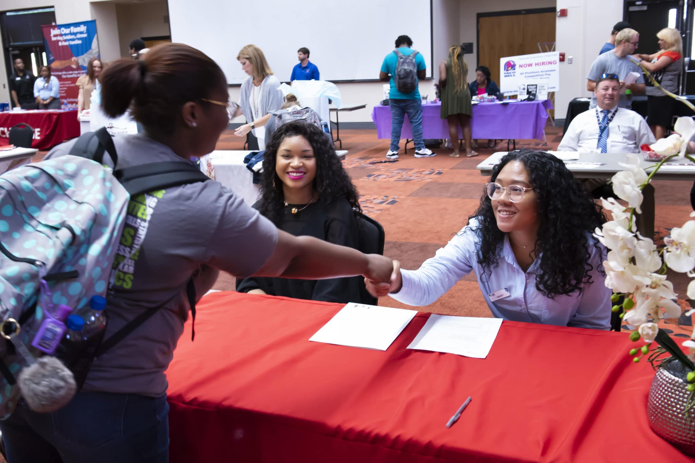

What career is right for me?
If you haven’t figured that out yet, you’re not alone. That’s why we’re here. The AUM Career Development Center’s mission is to educate, empower and create opportunities for AUM students and alumni to achieve individual professional success. We’ll take you through a proven process to assess and explore your career options.
As you move through your collegiate years, the CDC works to assist students in developing and articulating their knowledge, skills, and competencies to stand out from their peers and prove their professional value as they look to their future beyond AUM. We build relationships with faculty, employers, and other members of the AUM community to create internships and other experiential opportunities, jobs for working students, and career opportunities for students and alumni ready to enter their chosen field.
Prepare Your Skills
It’s time to work your plan by gaining experience through involvement and internships. Build your portfolio and sharpen the skills that will give you the edge in competing for jobs. Begin adding experiences, and skills to your profile, and search for internship or on-campus job opportunities.
Observe & Explore
What can you do with your major? We’ll help you research and select career options that align with your talents, interests and goals.
You’ll have an opportunity to observe professionals in the workplace as you develop your own Career Action Plan.
Knowing Yourself
Are you an analytical problem-solver or are you a creative type? Are you a Type-A personality or an introvert? Your search for a fulfilling career begins with knowing yourself. Identify your skills and values and start creating goals for your future. This will help you make decisions about your major.
Academic Advisors
Academic advisors serve an important role in helping students get registered for classes and guiding them along their educational journeys. Not only will your advisor assist you in selecting the classes you need for graduation, he/she can also serve as a resource to you for any questions you may have during your time at AUM.
Upon admission to AUM, you are assigned an advisor based upon your major. These advisors are located in various offices across campus. If you are not sure who your advisor is or how to get in touch with him/her, please contact us.
Contact Us
Office of Central Advising
Taylor Center 125
(334) 244-3969
centraladvising@aum.edu